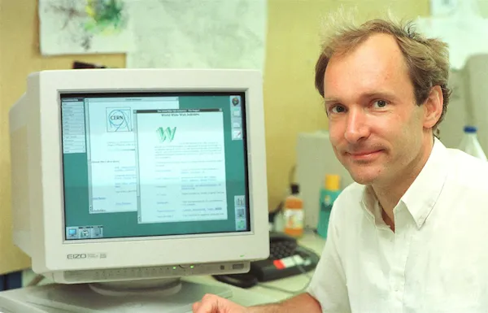

Embarque nesta jornada e descubra como a World Wide Web evoluiu de um projeto acadêmico simples para o ecossistema complexo e poderoso que conhecemos hoje.
Role para começar a história ↓

O Nascimento da Web
1989: A Proposta no CERN (Conseil Européen pour la Recherche Nucléaire)
O cientista britânico Tim Berners-Lee propôs um sistema de gerenciamento de informações baseado em hipertexto no CERN (Conselho Europeu para a Pesquisa Nuclear), inicialmente chamado "Mesh". Este foi o embrião da World Wide Web.
O foco inicial era sobre compartilhamento de informações, onde links (hipertexto) conectariam documentos por toda a rede. Era um sistema interno, mas que continha o conceito fundamental da World Wide Web: a ligação entre dados.
×
CERN DD/OC
Tim Berners-Lee, CERN/DD
Information Management: A Proposal
March 1989
Gestão da Informação: Uma Proposta
Resumo
Esta proposta diz respeito à gestão de informações gerais sobre aceleradores e experimentos no
CERN. Ela discute os problemas de perda de informação sobre sistemas complexos em evolução e apresenta uma
solução baseada em um sistema de hipertexto distribuído.
Palavras-chave: Hipertexto, Conferência por computador, Recuperação de documentos, Gestão da informação, Controle de projetos
Fonte: CERNtraduzido do original em inglês para o português do Brasil.
1991: HTML 1.0 e o Primeiro Site
A HTML (HyperText Markup Language) (que na verdade era um documento informal chamado "HTML Tags" e não uma especificação formal) descrevia 18 elementos, focados estritamente na estruturação de documentos científicos. O primeiro site entra no ar.
Você pode encontrar o primeiro site criado por Tim Berners-Lee no endereço: http://info.cern.ch
Foco: Estrutura de Documentos.
1994: World Wide Web Consortium (W3C)
Fundado em outubro de 1994 por Tim Berners-Lee, o inventor da World Wide Web, no Laboratório de Ciência da Computação do MIT (Massachusetts Institute of Technology), em colaboração com a Organização Europeia para a Pesquisa Nuclear (CERN).
A motivação para a sua criação foi a necessidade de um órgão neutro e sem fins lucrativos para regulamentar, criar e manter os padrões abertos da web, garantindo seu crescimento a longo prazo, interoperabilidade (funcionamento em diferentes plataformas e navegadores) e acessibilidade para todos. Berners-Lee percebeu que, para a web atingir seu potencial máximo, era crucial evitar a fragmentação por diferentes tecnologias proprietárias.
O W3C é responsável por desenvolver os protocolos e diretrizes que definem as principais tecnologias da web, como o HTML, CSS, XML, entre outros, por meio de um processo de consenso internacional entre organizações, membros, especialistas e o público.
1995: HTML 2.0, Browsers e Netscape
A Web se populariza com o lançamento de browsers como o Netscape Navigator. A HTML 2.0 padroniza a linguagem. Neste período, o CSS começa a ser concebido para separar a Aparência da Estrutura.
Simule a introdução do CSS nas páginas HTML.
Título
Menu de navegação
Conteúdo principal
Conteúdo lateral
Estrutura e aparência separadas! O CSS organiza o conteúdo.
1999: HTML 4.01 e a Era XHTML
A HTML 4.01, lançada em dezembro se tornou um padrão importante, estabelecendo uma separação mais clara entre o conteúdo (HTML) e a apresentação (CSS). Esta versão trouxe melhorias em formulários e no suporte a scripts, e também introduziu três variantes:
Strict: Para desenvolvedores que seguiam as novas regras de separação de conteúdo e apresentação.
Transitional: Permitindo o uso de elementos obsoletos para facilitar a transição de sites antigos para a nova especificação.
Frameset: Para sites que utilizavam frames.
Em seguida, o XHTML(baseado em XML) surge, forçando regras de sintaxe mais estritas, buscando maior compatibilidade e rigor técnico.
Desafio: Sintaxe Rigorosa.
O Início da Crise: A Web estava estagnando.
2004: A Formação da WHATWG
A HTML 4.01 era o padrão vigente, publicado pela W3C em 1999 (com erratas até 2001).
O W3C estava focado no desenvolvimento do XHTML 2.0, uma versão da HTML baseada em XML, que não era compatível com as versões anteriores e não tinha grande aceitação ou implementação pelos fabricantes de navegadores.
Em julho de 2004, num workshop do W3C sobre aplicações web, as propostas da Mozilla e Opera para evoluir a HTML de forma compatível com o que já existia foram rejeitadas.
Como resposta a essa rejeição e à estagnação da HTML, a Apple, Mozilla e Opera se uniram para formar o WHATWG(Web Hypertext Application Technology Working Group) e continuar o desenvolvimento da HTML de forma independente, focando nas necessidades reais dos desenvolvedores e na compatibilidade com o conteúdo existente.
O trabalho do WHATWG resultou no que inicialmente foi chamado de "Web Applications 1.0" e, mais tarde, renomeado para HTML5, cujo primeiro rascunho foi publicado em 2008.
Foco: Living Standard (Padrão Vivo).
2014: HTML5 é Oficializado
Após anos de desenvolvimento, a HTML5 é formalmente publicado pelo W3C. Ele traz elementos semânticos (<section>, <article>), suporte a multimídia nativa (<video>, <audio>) e inúmeras APIs. A Web nunca mais foi a mesma.
Teste o poder do Geolocation API!
A HTML5 permite que a Web interaja com o mundo real. Clique para descobrir sua localização (Apenas coordenadas de simulação serão exibidas se você negar).
Status:Aguardando...
Latitude:--
Longitude:--
Suas coordenadas não são armazenadas.
A HTML de Hoje: Uma Plataforma Completa
A HTML5 evoluiu para uma plataforma de aplicação completa, integrada com CSS Grid/Flexbox e JavaScript ES6+. O foco é em Acessibilidade (ARIA) e na velocidade e desempenho (Web Workers).
Visão: Performance e Acessibilidade.
Onde Iremos Agora?
Compreender a história da HTML é o primeiro passo para escrever o futuro da Web. Explore o Mapa do Conhecimento para iniciar seu domínio prático.